One run per condition per scenario (rep 1). Labels are shuffled per scenario. Same prompt for all three; only the workspace differed. Scores and the full tables are in lane-2.md.
Confirm before deleting confirm-delete
Build a destructive-action confirmation. A secondary button labelled "Delete project" opens a modal dialog titled "Delete this project?" with the description "Its files and history are removed. This cannot be undone.". The dialog has two actions: "Keep project" (closes the dialog) and a primary "Delete" button (closes the dialog and shows the status text "Project deleted." on the page).
Screenshots show the page after: “Delete project”. Switch “State” to see the page before.
build 1.00 · axe 1.00 · keyboard 1.00 · hit-target 1.00 · brand 1.00

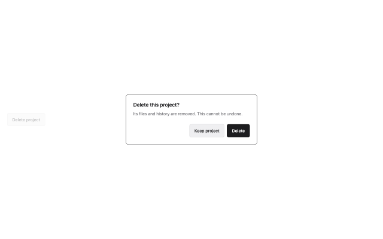
build 1.00 · axe 1.00 · keyboard 1.00 · hit-target 1.00 · brand 1.00

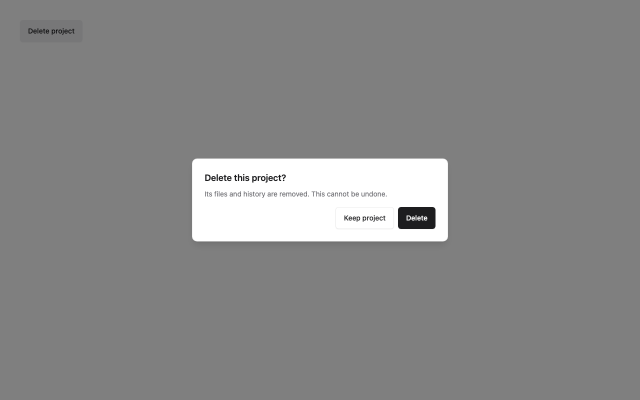
build 1.00 · axe 1.00 · keyboard 1.00 · hit-target 1.00 · brand 0.75

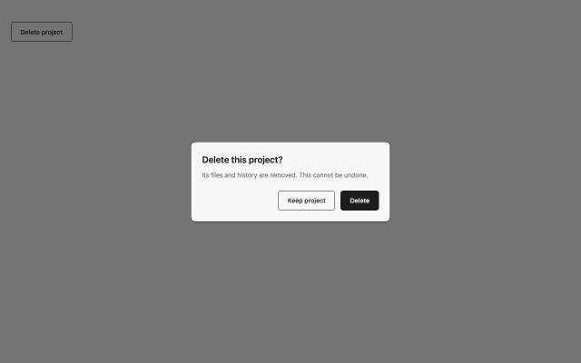
Filterable roster with row actions and an empty state crew-roster · new, no golden twin
Build a crew roster. Heading: "Crew". A search field labelled "Filter crew" narrows the list by name as the user types. The list shows five people, each with a name and a role: Ada Okafor (Flight engineer), Bo Lindqvist (Navigator), Chen Wei (Pilot), Dara Moss (Medic), Eli Hart (Comms). Each row has a compact actions button labelled "Actions for <name>" (for example "Actions for Ada Okafor") that opens a short list of actions: "Edit", "Reassign" and "Remove". Choosing Remove takes that person off the list. When nobody matches the filter, show "No crew match your filter." and a button "Clear filter" that empties the field and shows everyone again.
Screenshots show the page after: “Actions for Ada Okafor”. Switch “State” to see the page before.
build 1.00 · axe 1.00 · keyboard 1.00 · hit-target 1.00 · brand 1.00

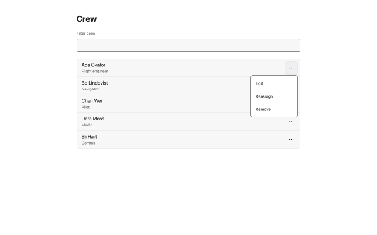
build 1.00 · axe 0.33 · keyboard 1.00 · hit-target 1.00 · brand 0.75

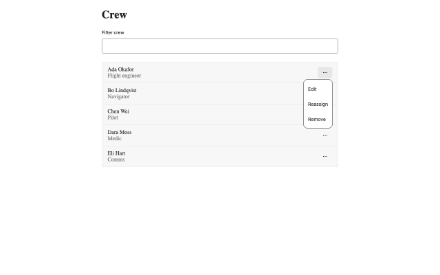
build 1.00 · axe 0.00 · keyboard 1.00 · hit-target 1.00 · brand 1.00

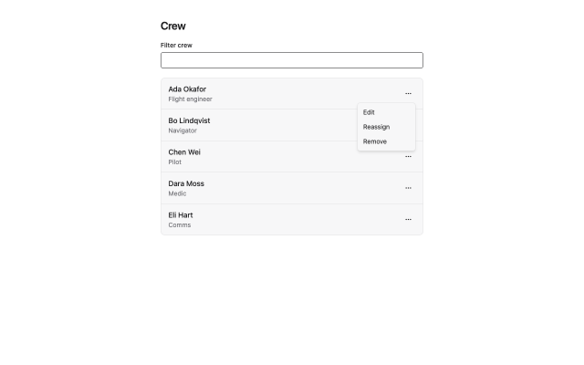
Tabbed crew card crew-tabs
Build a card for a crew member named "Ada Okafor" (heading), with the line "Flight engineer, Orbit 7" below it. Inside the card, show three tabs: "Overview" (text: "Leads the docking checklist."), "Passes" (text: "Next close pass in four days.") and "History" (text: "Charted since March."). Overview is selected first. The card has a footer with a quiet button "Remove from crew" and a primary button "Save changes".
Screenshots show the page after: “Passes”. Switch “State” to see the page before.
build 1.00 · axe 1.00 · keyboard 1.00 · hit-target 1.00 · brand 1.00

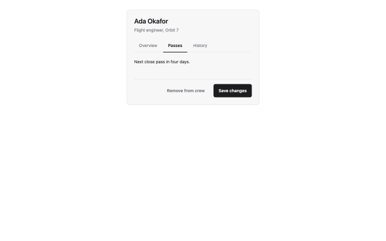
build 1.00 · axe 1.00 · keyboard 1.00 · hit-target 1.00 · brand 1.00

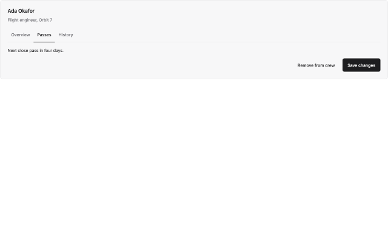
build 1.00 · axe 1.00 · keyboard 1.00 · hit-target 0.40 · brand 1.00

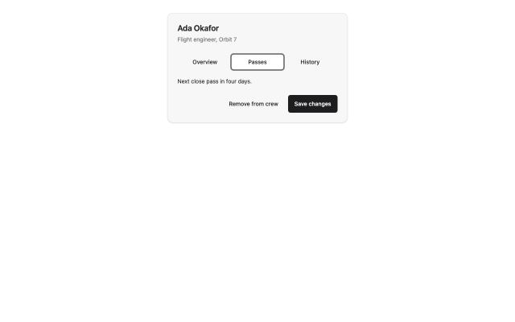
Three-step sign-up with validation onboarding · new, no golden twin
Build a three-step sign-up flow for a mission planner. Each step shows where the user is: "Step 1 of 3", "Step 2 of 3", "Step 3 of 3". Step 1, "Your details": fields "Full name" and "Email", both required. A "Continue" button checks them: an empty name shows "Enter your name." and an email without an @ shows "Enter a valid email.", each next to its field, and the flow does not advance until both are fixed. Step 2, "Your team": choose exactly one of "Solo", "Small crew (2 to 10)" and "Large crew (11 or more)", with "Back" and "Continue" buttons. Step 3, "Confirm": a summary of the name, email and team, a checkbox "I agree to the terms", and a primary button "Create account" that only works once the box is checked; then show "Account created.".
Screenshots show the page after: “Continue”. Switch “State” to see the page before.
build 1.00 · axe 1.00 · keyboard 1.00 · hit-target 1.00 · brand 1.00

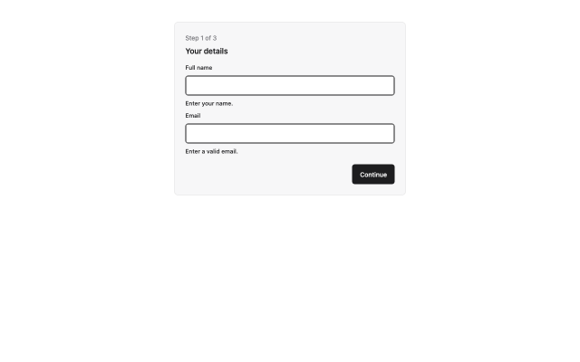
build 1.00 · axe 1.00 · keyboard 1.00 · hit-target 1.00 · brand 1.00

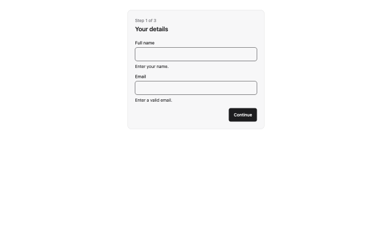
build 1.00 · axe 1.00 · keyboard 1.00 · hit-target 1.00 · brand 1.00

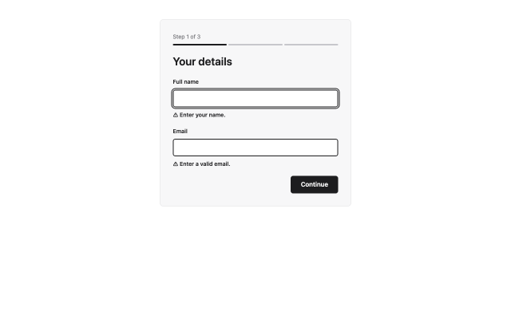
Profile settings form profile-settings
Build a profile settings form. It has: a text field labelled "Display name" with the hint "Shown to your crew."; a select labelled "Time zone" with three options (UTC, Berlin, Tokyo) and the placeholder "Choose a time zone"; a switch labelled "Email me about new orbits"; and a primary button "Save profile" that submits the form. After saving, show the status text "Profile saved.".
build 1.00 · axe 1.00 · keyboard 1.00 · hit-target 0.75 · brand 1.00

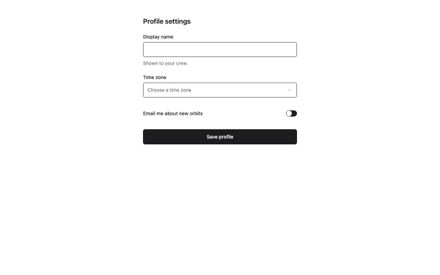
build 1.00 · axe 1.00 · keyboard 1.00 · hit-target 1.00 · brand 1.00

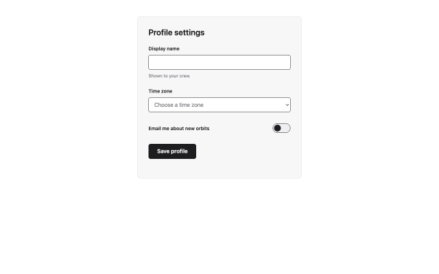
build 1.00 · axe 0.33 · keyboard 1.00 · hit-target 1.00 · brand 0.75

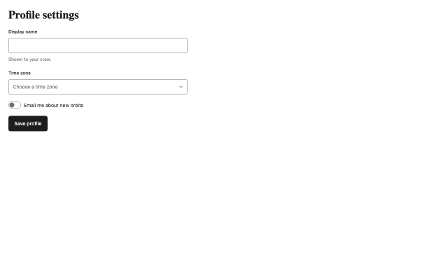
Workspace settings with a danger zone workspace-settings · new, no golden twin
Build the settings page for a workspace called "Orbit Lab". Heading: "Workspace settings". The settings are split into three sections the user switches between, one visible at a time: "General", "Notifications" and "Danger zone" (General shows first). General: a text field "Workspace name" prefilled with "Orbit Lab"; a choice of "Default role for new members" between Viewer, Editor and Admin (Editor chosen); a primary button "Save changes" that shows the status text "Settings saved.". Notifications: two on/off settings, "Weekly summary email" (on) and "Mentions" (off). Danger zone: one sentence explaining that deleting is permanent, and a button "Delete workspace". That button asks for confirmation in a modal titled "Delete Orbit Lab?" with the text "This removes all projects and members. It cannot be undone." and two actions, "Cancel" (closes it) and "Delete workspace" (closes it and shows the status text "Workspace deleted." on the page).
Screenshots show the page after: “Danger zone”, “Delete workspace”. Switch “State” to see the page before.
build 1.00 · axe 1.00 · keyboard 1.00 · hit-target 0.70 · brand 1.00

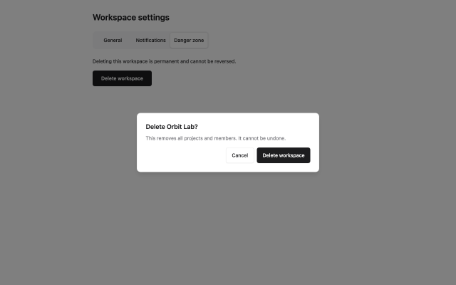
build 1.00 · axe 1.00 · keyboard 1.00 · hit-target 0.70 · brand 0.75

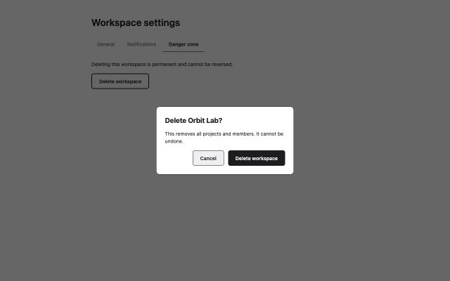
build 1.00 · axe 1.00 · keyboard 1.00 · hit-target 1.00 · brand 1.00

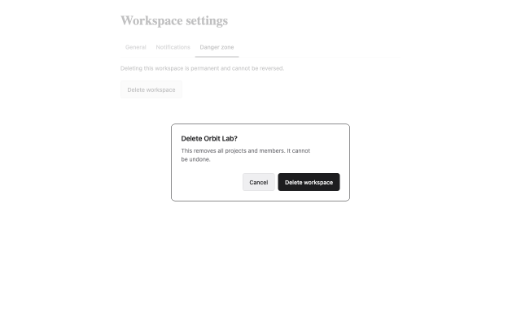